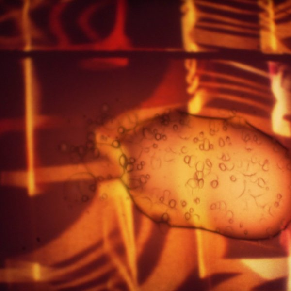

Kris Limbach
audiovisual artist and film maker, Berlin
- Film editing
- Prepared drums
- Tape manipulation
- No input mixing
- Field recordings
- Super 8
Works
 Ohnmacht
OhnmachtOhnmacht

The Lost Color

Music for Dysfunctional Airports
Vertical Movements
Composition · ambisonicsVertical Movements

Performance for film and tapes

Secret Shots
begin _if_ ()
Sound series · since 2005begin _if_ ()
Sonic Landscape Interventions
Sound walk · CaliforniaSonic Landscape Interventions
Panoptik
Audiovisual trioPanoptik

The February Tapes
emitter micro
Label & festivalemitter micro
Workshops
Teaching